Übersicht
Langsame, harte Zweihandtreffer. Verwunden + Überwältigen sind früh der Kern; später Rausch des Blutes und Tödlicher Stoß.
Siegesrausch glättet das Leveln: nach einem Kill direkt weitermachen und 10% Max-Leben zurückholen.
Weitreichende Stöße + Berserkerhaltung/Abfangen und die Wirbelwindaxt-Questreihe.
Tödlicher Stoß wird dein wichtigster Wut-Spender auf 6 Sekunden Cooldown.
Priorität beim Leveln
Der wichtigste Upgrade-Faktor.
1 Stärke = 2 Nahkampf-Angriffskraft.
Mehr Schaden, doppelte Wut bei Krits und Tiefe Wunden.
20 Beweglichkeit ≈ 1% Krit.
Weniger Downtime beim Solo-Leveln.
Talentroute 10–60
Vollständige Talentbäume – Level-60-Build
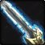
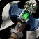
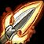
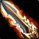
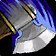
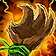
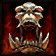
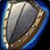
| Level | Talent | Baum |
|---|---|---|
| 10 | Verbessertes Verwunden 1/3 | Waffen |
| 11 | Verbessertes Verwunden 2/3 | Waffen |
| 12 | Verbessertes Verwunden 3/3 | Waffen |
| 13 | Verbesserter heldenhafter Stoß 1/3 | Waffen |
| 14 | Verbesserter heldenhafter Stoß 2/3 | Waffen |
| 15 | Verbessertes Überwältigen 1/2 | Waffen |
| 16 | Verbessertes Überwältigen 2/2 | Waffen |
| 17 | Verbesserter Taktiker 1/5 | Waffen |
| 18 | Verbesserter Taktiker 2/5 | Waffen |
| 19 | Verbesserter Taktiker 3/5 | Waffen |
| 20 | Tiefe Wunden 1/3 | Waffen |
| 21 | Tiefe Wunden 2/3 | Waffen |
| 22 | Tiefe Wunden 3/3 | Waffen |
| 23 | Verbesserter Taktiker 4/5 | Waffen |
| 24 | Verbesserter Taktiker 5/5 | Waffen |
| 25 | Aufspießender Stoß 1/1 | Waffen |
| 26 | Aggressionskontrolle 1/1 | Waffen |
| 27 | Zweihandwaffen-Spezialisierung 1/3 | Waffen |
| 28 | Durchbohren 1/2 | Waffen |
| 29 | Durchbohren 2/2 | Waffen |
| 30 | Weitreichende Stöße 1/1 | Waffen |
| 31 | Rausch des Blutes 1/5 | Waffen |
| 32 | Zweihandwaffen-Spezialisierung 2/3 | Waffen |
| 33 | Zweihandwaffen-Spezialisierung 3/3 | Waffen |
| 34 | Rausch des Blutes 2/5 | Waffen |
| 35 | Rausch des Blutes 3/5 | Waffen |
| 36 | Rausch des Blutes 4/5 | Waffen |
| 37 | Rausch des Blutes 5/5 | Waffen |
| 38 | Verbessertes Zerschmettern 1/2 | Waffen |
| 39 | Verbessertes Zerschmettern 2/2 | Waffen |
| 40 | Tödlicher Stoß 1/1 | Waffen |
| 41 | Waffenmeister 1/5 | Waffen |
| 42 | Waffenmeister 2/5 | Waffen |
| 43 | Waffenmeister 3/5 | Waffen |
| 44 | Waffenmeister 4/5 | Waffen |
| 45 | Waffenmeister 5/5 | Waffen |
| 46 | Grausamkeit 1/5 | Furor |
| 47 | Grausamkeit 2/5 | Furor |
| 48 | Grausamkeit 3/5 | Furor |
| 49 | Grausamkeit 4/5 | Furor |
| 50 | Grausamkeit 5/5 | Furor |
| 51 | Entfesselter Zorn 1/5 | Furor |
| 52 | Entfesselter Zorn 2/5 | Furor |
| 53 | Entfesselter Zorn 3/5 | Furor |
| 54 | Entfesselter Zorn 4/5 | Furor |
| 55 | Entfesselter Zorn 5/5 | Furor |
| 56 | Durchdringendes Heulen 1/1 | Furor |
| 57 | Verbesserter Sturmangriff 1/2 | Waffen |
| 58 | Verbesserter Sturmangriff 2/2 | Waffen |
| 59 | Verbesserter heldenhafter Stoß 3/3 | Waffen |
| 60 | Abwehr 1/5 | Waffen |
Wichtige Skills
| Level | Skill | Warum wichtig? |
|---|---|---|
| 1 | Schlachtruf | Immer aktiv halten: direkte Angriffskraft für dich und die Gruppe. |
| 4 | Sturmangriff | Standard-Opener und frühe Wutquelle. |
| 4 | 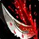 Verwunden | In Forever deutlich wichtiger: skaliert mit Angriffskraft und kann kritisch treffen. |
| 6 | 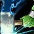 Donnerknall | 20% langsameres Angriffstempo des Gegners; sehr stark fürs Solo-Leveln. |
| 8 | 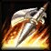 Kniesehne | Kiten und fliehende Gegner kontrollieren. |
| 10 | 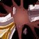 Rüstung zerreißen | Guter Wut-Spender auf langlebigen Zielen. |
| 12 | 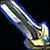 Überwältigen | Extrem effizient; mit Talent sehr hohe Krit-Chance. |
| 14 | Demoralisierungsruf | Reduziert eingehenden Nahkampfschaden. |
| 18 | 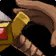 Entwaffnen | Sehr stark gegen bewaffnete Humanoide. |
| 20 | 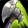 Spalten | Wut-Spender gegen zwei Ziele. |
| 20 | Siegesrausch | Nach einem Kill: Schaden + 10% maximales Leben zurück. |
| 20 | Gegenschlag | Starker Cooldown gegen viele Nahkampfangriffe. |
| 20 | Zerschmettern | Später mit Talent besser in die Rotation integrierbar. |
| 24 | 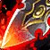 Hinrichten | Finisher; beim Leveln nicht immer Wut dafür verschwenden. |
| 28 | Schildwall | Notfall-Defensive; benötigt Schild. |
| 30 | 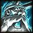 Berserkerhaltung | +3% Krit, aber +10% erlittener Schaden. |
| 30 | Abfangen | Mobilität im Kampf + Betäubung. |
| 32 | Berserkerwut | Furcht-/Handlungsunfähigkeits-Immunität, extra Wut bei Treffern. |
| 36 | 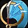 Wirbelwind | Waffenschaden an bis zu vier Zielen. |
| 38 | Zuschlagen | Interrupt mit Zauberschulensperre. |
| 40 | Tödlicher Stoß | Zentraler Arms-Spender, 6 Sek. Abklingzeit. |
| 50 | Tollkühnheit | Extremer Krit-Cooldown; erhöht eingehenden Schaden. |
Rotation & Prioritäten
4–19
Schlachtruf → Sturmangriff → Verwunden → Donnerknall → Rüstung zerreißen auf längeren Gegnern → Überwältigen. Heldenhafter Stoß nur bei überschüssiger Wut.
20–24
Siegesrausch nach jedem Kill möglichst ins nächste Ziel mitnehmen. Bei zwei Zielen Spalten nur mit genug Wut.
25–29
Aufspießender Stoß ergänzen. Besonders stark gegen Riesen, Drachkin und berittene Ziele. Hinrichten beim Leveln nicht blind spammen.
30–35
Einzelziel: Verwunden → Überwältigen → Donnerknall → Rüstung zerreißen → Aufspießender Stoß. Zwei Ziele: Wut poolen → Weitreichende Stöße → Überwältigen/Spalten.
36–39
Mehrere Gegner: Wut vorbereiten → Weitreichende Stöße → Überwältigen → Wirbelwind → Spalten, falls genug Wut bleibt.
40–60
Verwunden halten → Überwältigen sofort → Tödlicher Stoß auf Cooldown → Zerschmettern nach dem Waffenschwung → Donnerknall → Rüstung zerreißen. Heldenhafter Stoß erst bei ca. 40+ Wut.
AoE 40+
Verwunden → Weitreichende Stöße → Tödlicher Stoß → Wirbelwind → Spalten bei hoher Wut. Wut nicht vor wichtigen Cooldowns leeren.
Überleben
Demoralisierungsruf + Donnerknall bei gefährlichen Pulls. Kniesehne/Durchdringendes Heulen zum Entkommen. Gegenschlag und Schildwall für Notfälle.